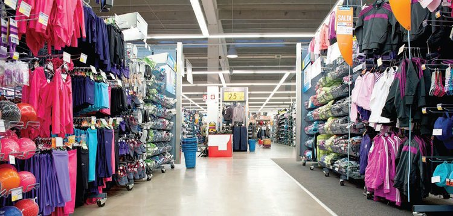

By Thành Nam
"Bán quần áo online lấy hàng ở đâu" đang trở thành mối quan tâm của rất nhiều các bạn trẻ và những bà mẹ có nhiều thời gian rảnh rỗi, có mong muốn kiếm thêm thu nhập cho gia đình. Nếu bạn có ý định mở shop bán quần áo online nhưng không biết nên lấy nguồn hàng ở đâu? Dưới đây là 4 địa chỉ nhập nguồn hàng quần áo thời trang giá sỉ lẻ giá rẻ phổ biến nhất dành cho các shop quần áo online trên facebook, zalo, instagram để mọi người cùng tham khảo.
Muốn mở shop quần áo lấy hàng ở đâu?

Các chợ đầu mối
Ban đầu, hầu như tất cả mọi người nảy sinh ý tưởng kinh doanh quần áothì phần lớn mọi người đều nghĩ ngay trong đầu sẽ nhập hàng tại các chợ đầu mối. Và theo như thống kê của chúng tôi thì gần như 70% các shop bán quần áo online đều lấy hàng từ các chợ đầu mối lớn như ở Hà Nội là chợ Ninh Hiệp, Đồng Xuân, tp Hồ Chí Minh là chợ Tân Bình, An Đông.
Nguồn hàng nhập về các chợ này chủ yếu được là từ Quảng Châu, Trung Quốc, Thái Lan hoặc đặt hàng từ các xưởng may gia công. Nhập hàng tại các chợ đầu mối có ưu điểm là khá thuận tiện, không tốn nhiều công sức, các mặt hàng tại đây khá phong phú về kiểu dáng, mẫu mã, chủng loại.
Mặc dù vậy chất lượng sản phẩm đa số chỉ ở mức bình dân. Và chỉ những người thân quen hay có mối làm ăn lâu năm mới mong muốn có được giá sỉ tốt nhất. Các chủ hàng chỉ cần nhìn một cái là biết ngay bạn là dân chuyên nghiệp hay gà mờ. Nếu không có kinh nghiệm thì kiểu gì cũng bị chém giá cao.
Các xường may
Bạn có thể tự tìm cho mình nguồn hàng là các cơ sở chuyên gia công sản xuất quần áo thời trang các loại và trở thành đối tác của họ. Đặt hàng và chọn mẫu trực tiếp tại xưởng thì giá sẽ rẻ hơn là khi mua lại qua trung gian. Hơn nữa, các sản phẩm được may ra đều có giấy chứng nhận đăng ký nhãn hiệu hàng hóa của cục sở hữu trí tuệ cấp. Nên quần áo lấy từ nguồn này có ưu điểm là ít bị đụng hàng với các shop khách.
Nhưng nói chung thì hàng gia công trong nước không được đẹp như hàng đặt ở nước ngoài về. Chất lượng vải cũng là một vấn đề đáng lưu ý. Ngoài ra các xưởng may thường có quy định đơn hàng tối thiểu, nên nếu là người mới kinh doanh đặc biệt là kinh doanh nhỏ với số vốn ít sẽ gặp khó khăn vì cần khá nhiều vốn.
Các website thương mại điện tử
Trên các diễn đàn mua bán như muare.vn, 5giay.vn, enbac.vn, bạn sẽ gặp được những chủ shop khác để hợp tác cùng mua được những đơn hàng lớn với giá rẻ của các nhà bán buôn. Bạn cũng có thể vào những trang tích hợp mua chung theo nhóm như muachung, hotdeal, nhommua, cungmua… để được mua hàng với giá đã chiết khấu tùy từng sản phẩm so với giá bán lẻ tại các shop bán quần áo online khác.
Tuy nhiên, ảnh các sản phẩm được rao bán trên các shop bán quần áo online ở những trang web này chủ yếu là lấy ảnh trên mạng hoặc ảnh chụp nhưng photoshop khác hẳn so với nhìn ngoài đời thật.
Nếu muốn lấy hàng thực sự chất lượng với giá hợp lý thì bạn nên xem xét lấy hàng từ nước ngoài. Có thể nhập hàng theo 3 cách thức sau:
Đi Trung Quốc hoặc Thái Lan lấy hàng giá giảm đáng kể nhưng lại tốn chi phí đi lại, ăn ở. Vì thế, thường chỉ có các chủ shop đã có nhiều kinh nghiệm và mỗi lần đi lấy số lượng lớn mới thì mới có thể lựa chọn cách thức này.
Nếu có người thân quen đang sinh sống tại nước ngoài hoặc có điều kiện đi nước ngoài thường xuyên thì sẽ rất lý tưởng nếu bạn có thể liên hệ với họ.
Hình thức này đang rất được các bạn chủ shop lựa chọn bởi không phải sang trực tiếp mà vẫn lựa chọn được hàng hóa vô cùng đa dạng với giá rẻ. Thực chất, hầu hết nguồn gốc quần áo đều được nhập về từ Quảng Châu, Trung Quốc là chủ yếu. Bạn hoàn toàn có thể lập tài khoản trên các website nước ngoài và đặt hàng. Có nhiều trang web miễn phí hoặc giảm giá cước vận chuyển nếu bạn đặt hàng với số lượng nhiều. Thậm chí, nếu mua hàng với số lượng nhiều, khách hàng còn được giảm giá thêm cho sản phẩm. Ngoài ra, bạn có thể thuê các bên trung gian đặt hàng hộ, họ là những người có kinh nghiệm sẽ biết chỗ nào đặt hàng là tốt nhất cho bạn.
Ở trên là một số gợi ý về nguồn hàng quần áo sỉ lẻ. Mọi thắc mắc liên quan đến chi tiết quá trình nhập hàng, bạn đọc vui lòng bình luận ở bên dưới những thắc mắc đó để cùng mọi người trao đổi và chia sẻ với nhau. Chúc các bạn sẽ tìm được một nguồn hàng quần áouy tín và chất lượng. Đừng quên cảm ơn chúng tôi khi bạn đã thành công. Nếu bạn đã đọc hết đến đây và thấy nội dung hữu ích thì hãy đánh giá bằng biểu tượng 5 sao là cách bạn giúp chúng tôi có đông lực để tiếp tục chia sẻ những kiến thức hay.